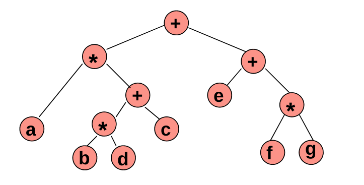

Estructuras de Datos y Algoritmos II
Clase 2
versión imprimible o pfd
Estructuras de Datos y Algoritmos II
Árboles
Repaso
¿Qué es una estructura de datos?
¿Qué es un algoritmo?
El placard
Inter-dependencia entre
propiedades y algoritmos
ventajas y desventajas¿Cómo determinamos qué estructura de datos y qué algoritmos son mejores para solucionar un problema determinado?
Analicemos la búsqueda en una lista ordenada y en una no ordenada
comparamos contando...
considerando el peor caso posible en cada caso...
La búsqueda binaria tarda mucho menos que la linealÁrboles
Laberintos
El jardin de los senderos que se bifurcan
Recurrencia, recursión o recursividad es la forma en la cual se especifica un proceso basado en su propia definición.
Recursión
Definición
Es una colección de nodos, tal que:
- puede estar vacía
- o puede estar formada por un nodo (raíz) y otros dos árboles T1 y T2, dónde la raíz de cada árbol Ti está conectado a R por medio de una arista.
Términos
nodo, arista, raíz, hoja, subárbol
padre, hijos, hermanos
camino
desde n1 hasta n k , es una secuencia de nodos n 1 , n 2 , ....,n k tal que n i es el padre de n i+1 , para 1 ≤ i < k.
La longitud del camino es el número de aristas, es decir k-1. Existe un camino de longitud cero desde cada nodo a sí mismo. Existe un único camino desde la raíz a cada nodo
profundidad de un nodo
Es la longitud del único camino desde la raíz hasta el nodo.
La raíz tiene profundidad cero.
altura de un nodo
longitud del camino más largo desde el nodo hasta una hoja.
Las hojas tienen altura cero.
La altura de un árbol es la altura del nodo raíz.
Grado de un nodo:
es el número de hijos del nodo
Ancestros y Descendientes
N1 es ancestro de N2 y N2 es descendiente de N1, si existe un camino desde N1 a N2
Recorridos
En profundidad (DFS): inorden, preorden, postorden
por niveles (BFS)
preorden
1. proceso la raiz
2. Si tengo hijo derecho, recorro el subarbol derecho
3. Si tengo hijo izquierdo, recorro el subarbol izquierdo
inorden
1. Si tengo subarbol derecho, recorro el subarbol derecho
2. proceso la raíz
3. Si tengo subarbol izquierdo, recorro el subarbol izquierdo
postorden
...
Por niveles (BFS)
utilizamos estructura auxiliar...
encolar raíz
mientras haya nodos en la cola:
desencolo un nodo
proceso el nodo
si tiene hijo derecho, encolo hijo derecho
si tiene hijo izquierdo, encolo hijo izquierdo
Aplicaciones
Árboles binarios de búsqueda
Árboles de expresión
Árboles binarios de búsqueda

Árboles de expresión
a*( (b*d) +c) ) + ( e+ (f*g) )
Fin
¿Preguntas?